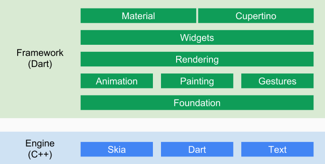
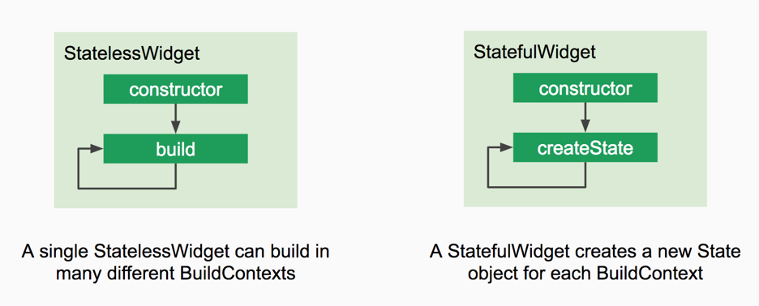
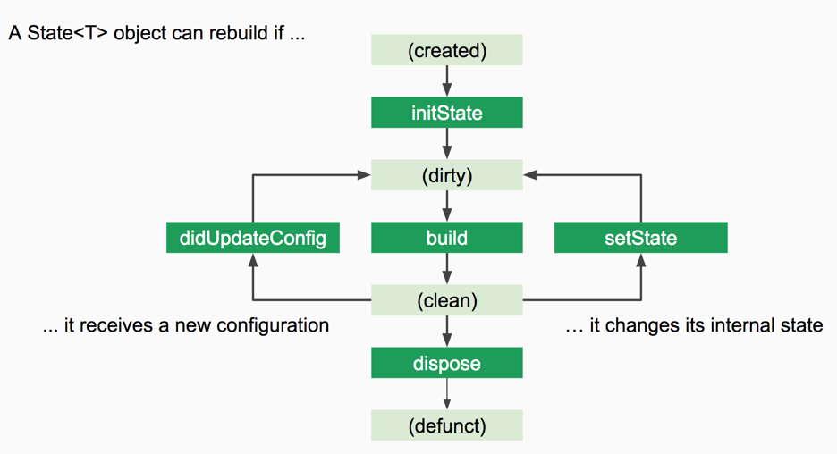

## Dart for mobile and Web exploring how to achieve cross-platform front end code-reuse
## What will be covered? 1. what is Dart? 2. Dart for the Web 3. what is Flutter? 4. Dart BLoCs for Flutter & Web
## What is Dart? * Open source (BSD license) * General purpose (but focused on front ends) * Object oriented * Type safe with type inference * Can run stand-alone in the dart vm * can be AOT-compiled into machine code (as with Flutter) Has a great [language tour](https://www.dartlang.org/guides/language/language-tour)
## Comes with useful tools... * pub - the [Dart package manager](https://pub.dartlang.org/) * dartanalyzer - static code analysis * dartfmt - formats according to the [Dart Style Guide](https://www.dartlang.org/guides/language/effective-dart/style) * stagehand - [Dart project generator](https://github.com/dart-lang/stagehand)
## ... and nice syntax sugar Like * functions as true objects * anonymous functions * string interpolation * [Futures](https://www.dartlang.org/tutorials/language/futures) and [Streams](https://www.dartlang.org/tutorials/language/streams)
## Dart for the Web Possible with Dart standard libraries alone `dart:html` as Dart-y wrapper around the DOM and window APIs Obviously Google recommends the use of [AngularDart](https://webdev.dartlang.org/angular)
## Dart's tooling for Web development [webdev](https://webdev.dartlang.org/tools/webdev) CLI for users and tools to build and serve web apps
## Getting started ``` $ pub global activate webdev $ pub global activate stagehand $ mkdir quickstart $ cd quickstart $ stagehand web-angular $ pub get $ webdev serve ``` Note: webdev will use dartdevc under the hood to transpile to JS
## a glance under the hood The webdev tool is built on [build_runner](https://webdev.dartlang.org/tools/build_runner) Whenever you `webdev build` or `webdev serve`, [dartdevc](https://webdev.dartlang.org/tools/dartdevc) (also known as DDC) is used to transpile Dart to JS However dartdevc is for development only. If you pass `--release` to any `webdev` command, [dart2js](https://webdev.dartlang.org/tools/dart2js) is used instead. Note: With dart2js you get advanced optimizations such as tree shaking
## what is Flutter? * reactive framework * for cross platform native apps development * with built-in Material Design and Cupertino widgets Note: * development platform for Google’s upcoming Fuchsia operating system * Currently in release preview 1 * Ready for production apps (stated by google during i/o in may 2018) * Supports hot reloading
## Framework & Engine  [Source](https://docs.google.com/presentation/d/1cw7A4HbvM_Abv320rVgPVGiUP2msVs7tfGbkgdrTy0I/edit#slide=id.gbb3c3233b_0_162)
## everything is a Widget  [Source](https://docs.google.com/presentation/d/1cw7A4HbvM_Abv320rVgPVGiUP2msVs7tfGbkgdrTy0I/edit#slide=id.gbb3c3233b_0_162)
## the reactive part  [Source](https://docs.google.com/presentation/d/1cw7A4HbvM_Abv320rVgPVGiUP2msVs7tfGbkgdrTy0I/edit#slide=id.gbb3c3233b_0_162)
## Getting started ``` $ flutter create quickstart $ cd quickstart $ flutter run ```
## Dart BLoCs for Flutter & Web
## What is BLoC?! > The BLoC pattern was conceived by Cong Hui, Paolo Soares, and Wenfan Huang at Google > BLoC allows Google to share code between Flutter (mobile) and AngularDart (web) apps Source: [Blogpost by Filip Hracek, working on Google’s Dart programming language and Flutter SDK](https://medium.com/flutter-io/build-reactive-mobile-apps-in-flutter-companion-article-13950959e381)
## But WHY BLoC?! Because your view code is actually full of business logic and thus not platform agnostic at all... sry! The approach of UI’s reaction to data change is different between Flutter’s Stateful widget and AngularDart’s Change Detection
## So how to build a BLoC? * BLoC’s input and output interfaces are all <mark>Stream / Sink</mark> * BLoC’s <mark>dependencies are always injectable</mark> and environment independent * There is no conditional branch for each environment in BLoC * Implementation is free as long as it complies with the above rules Source: [Paolo Soares @ DartConf](https://www.youtube.com/watch?v=PLHln7wHgPE)
## How is BLoC helping again? To draw an asynchronous value independent of platform, Dart‘s BLoC pattern uses Streams. Flutter has <mark>StreamBuilder</mark> as a mechanism for redrawing each time new data flows in on the Stream. AngularDart also has a similar reaction mechanism thanks to the <mark>async pipe</mark>.
## Demo Courtesy of Brian Egan https://github.com/brianegan/github_search_angular_flutter